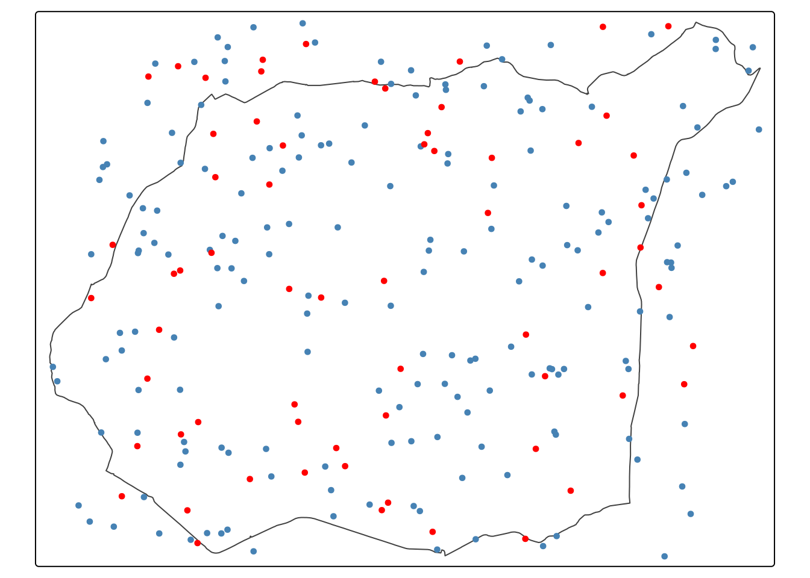
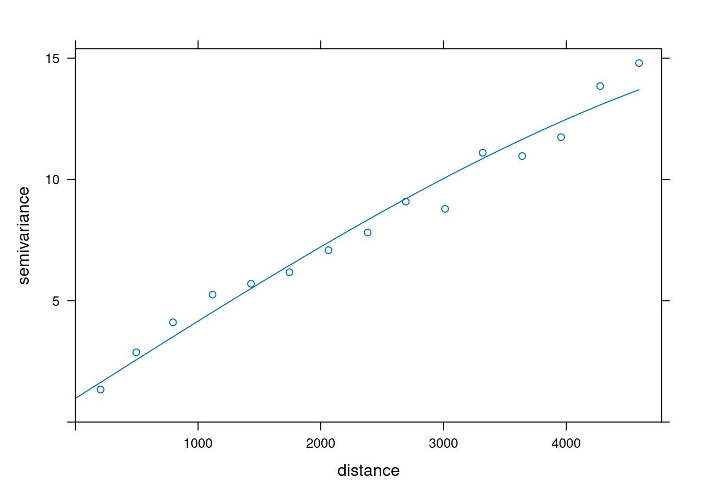
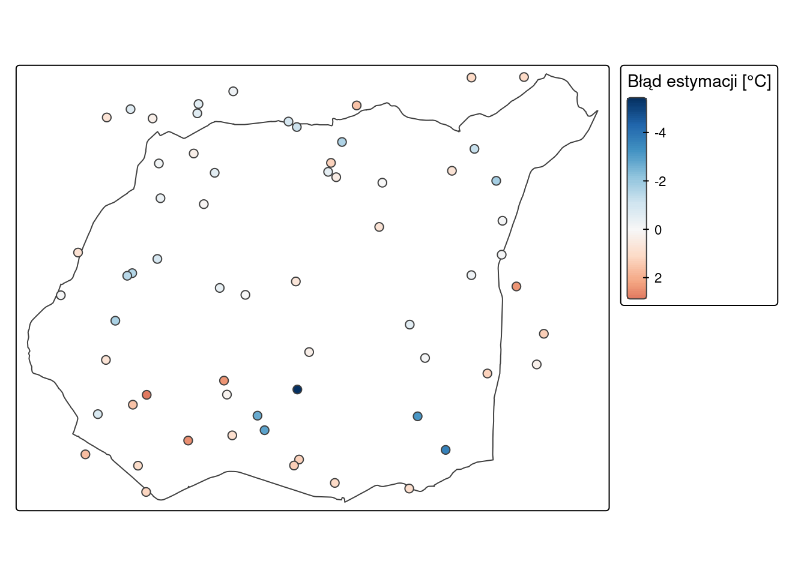
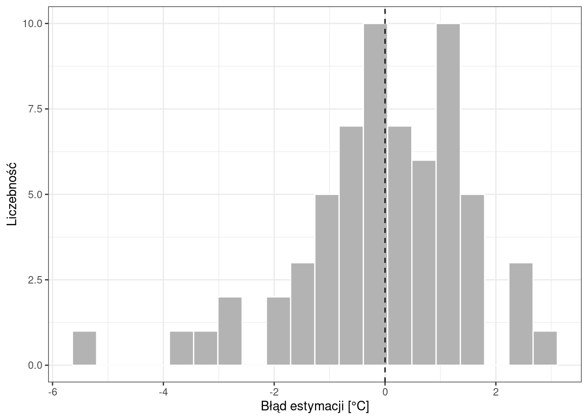
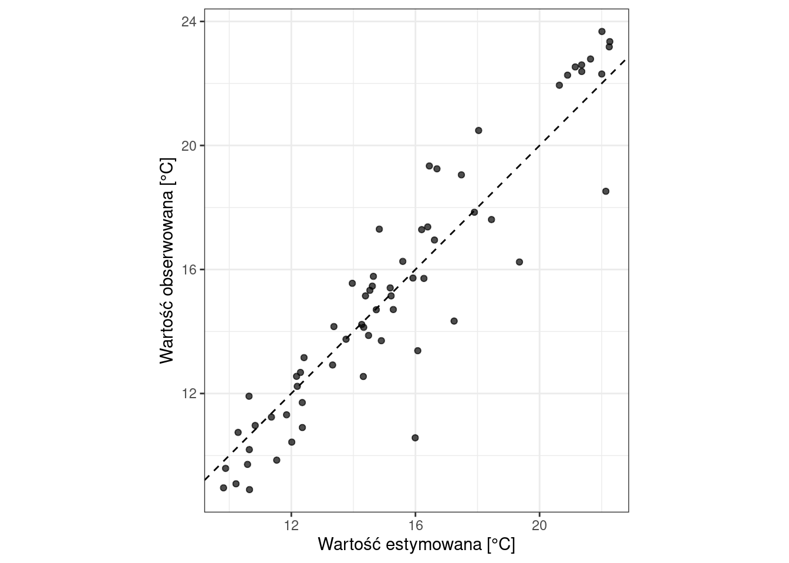
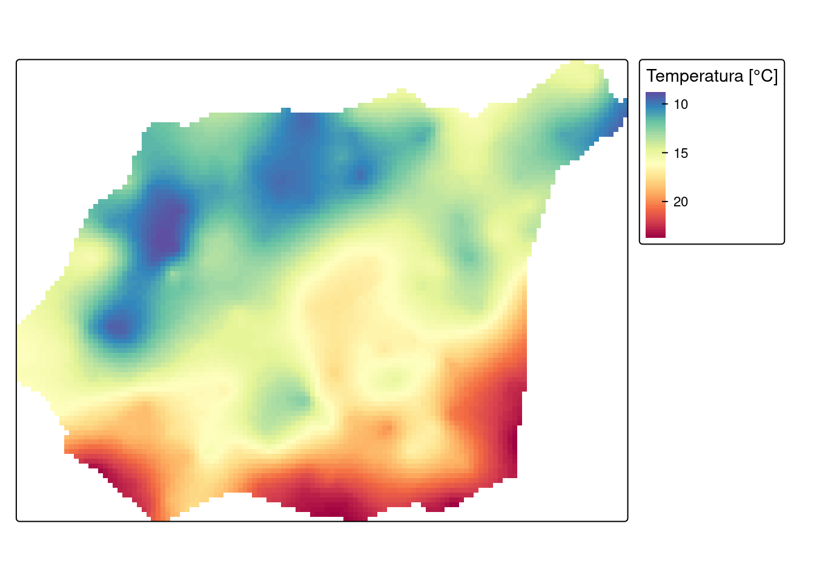

library(sf)
library(terra)
library(gstat)
library(rsample)
library(tmap)
library(ggplot2)
library(dplyr)11 Ocena jakości estymacji
Czego się nauczysz
Po tym rozdziale potrafisz wykonać w R:
- podzielić zbiór danych na część treningową i testową (
initial_split()), - zbudować model semiwariogramu na zbiorze treningowym i wykonać estymację dla zbioru testowego,
- obliczyć błąd estymacji i przedstawić go na mapie, histogramie i wykresie rozrzutu,
- obliczyć średni błąd estymacji, pierwiastek błędu średniokwadratowego i współczynnik determinacji,
- przeprowadzić kroswalidację (
krige.cv()), - wykonać estymację w siatce po pozytywnej ocenie modelu.
Rozumiesz i umiesz zinterpretować:
- co oznacza dodatni, a co ujemny błąd estymacji,
- jaki rozkład błędu świadczy o dobrej estymacji,
- wartości optymalne MPE, RMSE i \(r^2\) oraz to, czego każda z tych statystyk nie wykrywa samodzielnie,
- różnicę między walidacją podzbiorem a kroswalidacją — ich zalety i wady,
- dlaczego wariancja krigingowa z Rozdział 10 mierzy co innego niż błąd estymacji.
Teoria: Najważniejsze informacje. Funkcje: Załącznik B. Słownik: Załącznik D.
11.1 Wprowadzenie
Rozdział 10 dał mapę temperatury i mapę wariancji krigingowej. Wariancja krigingowa opisuje jednak geometrię sieci pomiarowej, a nie trafność oszacowań — nie korzysta z wartości badanej cechy, więc nie może powiedzieć, o ile estymacja rozminęła się z rzeczywistością.
Na to pytanie odpowiada walidacja: procedura, która dla wybranych lokalizacji dostarcza dwóch wartości — obserwowanej i estymowanej — i pozwala je porównać. Różnica między nimi to błąd estymacji, a jego rozkład i statystyki podsumowujące służą do oceny modelu oraz do porównywania wariantów estymacji między sobą: różnych wariantów krigingu, alternatywnych modeli semiwariogramu lub innych parametrów sąsiedztwa szukania.
Obie stosowane metody walidacji — podzbiorem i kroswalidacja — wykorzystują posiadany już zbiór danych, zamiast wymagać kosztownego zbierania dodatkowych próbek kontrolnych.
11.2 Struktura obiektów: wynik walidacji
Walidacja podzbiorem daje warstwę punktową z wynikiem predict() dla zbioru testowego: kolumny var1.pred i var1.var. Wartość obserwowaną dopisujemy sami ze zbioru testowego, a błąd liczymy jako ich różnicę.
Kroswalidacja (krige.cv()) zwraca warstwę punktową o kolumnach:
| Kolumna | Zawartość |
|---|---|
var1.pred |
wartość estymowana |
var1.var |
wariancja krigingowa |
observed |
wartość obserwowana |
residual |
błąd estymacji: observed - var1.pred |
zscore |
błąd podzielony przez pierwiastek wariancji krigingowej |
fold |
numer podzbioru, w którym dana obserwacja była pomijana |
W obu przypadkach obowiązuje ta sama konwencja znaku:
\[\text{błąd estymacji} = \text{wartość obserwowana} - \text{wartość estymowana}\]
Dodatni błąd oznacza więc, że wartość obserwowana jest większa od estymowanej, czyli model zaniżył oszacowanie. Ujemny — że model oszacowanie zawyżył.
11.3 Ocena jakości estymacji w R
| Czynność / statystyka | Funkcja | Wartość optymalna |
|---|---|---|
| podział zbioru | initial_split(prop = , strata = ), training(), testing() |
— |
| estymacja dla zbioru testowego | gstat() + predict() |
— |
| kroswalidacja | krige.cv() |
— |
| błąd estymacji | obserwowane - estymowane |
rozkład symetryczny wokół zera |
| średni błąd estymacji (MPE) | mean(blad) |
0 |
| pierwiastek błędu średniokwadratowego (RMSE) | sqrt(mean(blad^2)) |
jak najmniejszy |
| współczynnik determinacji (\(r^2\)) | cor(obs, est)^2 |
bliski 1 |
Wzory wszystkich trzech statystyk znajdują się w rozdziale teoretycznym części. Pełne zestawienie funkcji — Załącznik B.
Procedury podziału zbioru i kroswalidacji są losowe, więc wynik zależy od ziarna generatora liczb losowych. Ustawiamy je raz, na początku rozdziału.
set.seed(1111)interpolate_gstat = function(model, x, ...) {
v = st_as_sf(x, coords = c("x", "y"), crs = st_crs(model$data[[1]]$data), remove = FALSE)
p = predict(model, v, ...)
st_drop_geometry(p)
}11.4 Przykład: ocena jakości estymacji temperatury
Kroki analizy
- Podział zbioru na treningowy i testowy —
initial_split(),training(),testing(). - Semiwariogram i model na zbiorze treningowym —
variogram(),fit.variogram(). - Estymacja dla zbioru testowego i błąd estymacji —
gstat(),predict(). - Analiza błędu: mapa, histogram, wykres rozrzutu.
- Statystyki jakości estymacji — MPE, RMSE, \(r^2\).
- Kroswalidacja —
krige.cv(). - Estymacja w siatce i zapis —
interpolate(),writeRaster().
Kod spoza tych siedmiu kroków jest objaśnieniem: nie trzeba go uruchamiać, żeby wykonać analizę.
Krok 1: podział zbioru
Walidacja podzbiorem dzieli dane na dwie części:
- zbiór treningowy — służy do zbudowania semiwariogramu empirycznego i dopasowania modelu; zawiera więcej obserwacji,
- zbiór testowy — dla jego punktów wykonujemy estymację, a następnie porównujemy wynik z wartością rzeczywistą.
Funkcja initial_split() z pakietu rsample dzieli zbiór, zachowując w obu częściach podobny rozkład wartości (argument strata). Argument prop = 0.75 przydziela 75% obserwacji do zbioru treningowego.
punkty = read.csv("data/punkty.csv") |>
filter(!is.na(temp)) |>
st_as_sf(coords = c("x", "y"), crs = "EPSG:2180")
granica = vect("data/granica.gpkg")
podzial = initial_split(punkty, prop = 0.75, strata = temp)
train = training(podzial)
test = testing(podzial)
c(wszystkie = nrow(punkty), treningowy = nrow(train), testowy = nrow(test)) wszystkie treningowy testowy
247 183 64 Dane filtrujemy po kolumnie temp. Funkcja na.omit() usunęłaby wiersze z brakiem w którejkolwiek kolumnie — a punkty.csv ma braki także w srtm, clc, ndvi i savi — więc zbiór byłby mniejszy niż w pozostałych rozdziałach tej części.
tm_shape(granica) +
tm_borders() +
tm_shape(train) +
tm_dots(fill = "steelblue", size = 0.3) +
tm_shape(test) +
tm_dots(fill = "red", size = 0.3)
Kolorem niebieskim zaznaczono zbiór treningowy, czerwonym — testowy.
Krok 2: semiwariogram i model na zbiorze treningowym
Model budujemy wyłącznie na zbiorze treningowym. Punkty testowe muszą pozostać nieużyte — inaczej ocena nie byłaby niezależna od estymacji.
vario = variogram(temp ~ 1, locations = train)
model = fit.variogram(vario, vgm(psill = 10, model = "Sph", range = 3000, nugget = 0.5))
model model psill range
1 Nug 0.9745233 0.000
2 Sph 15.3695373 7190.001plot(vario, model = model)
Krok 3: estymacja dla zbioru testowego i błąd estymacji
Estymację wykonujemy krigingiem zwykłym. Argument locations wskazuje zbiór treningowy, bo na nim zbudowany został model; predict() liczy wartości dla lokalizacji zbioru testowego.
ok_param = gstat(formula = temp ~ 1, locations = train, model = model, nmax = 30)
ok_test = predict(ok_param, test, debug.level = 0)
# wartość obserwowana i błąd estymacji
ok_test$temp_obs = test$temp
ok_test$blad = ok_test$temp_obs - ok_test$var1.pred
head(ok_test)Simple feature collection with 6 features and 4 fields
Geometry type: POINT
Dimension: XY
Bounding box: xmin: 747304.1 ymin: 713037.9 xmax: 751710.4 ymax: 719656.1
Projected CRS: ETRF2000-PL / CS92
var1.pred var1.var geometry temp_obs blad
1 13.33027 2.556314 POINT (749399.8 716955.2) 12.919225 -0.4110407
2 16.69310 2.572834 POINT (748766.6 713889) 19.247132 2.5540330
3 22.26214 2.357392 POINT (751710.4 713037.9) 23.350026 1.0878850
4 20.63731 2.401245 POINT (750992.9 713508) 21.942678 1.3053722
5 10.65223 2.348506 POINT (747304.1 716296.2) 8.898949 -1.7532854
6 12.16901 2.839252 POINT (748877.8 719656.1) 12.552686 0.3836731Krok 4: analiza błędu estymacji
Rozkład przestrzenny błędu pokazuje, czy odchylenia skupiają się w którejś części obszaru. Skalę rozbieżną z punktem środkowym w zerze dobieramy tak, by odcień zależał od znaku i wielkości błędu.
tm_shape(granica) +
tm_borders() +
tm_shape(ok_test) +
tm_symbols(fill = "blad",
fill.scale = tm_scale_continuous(values = "-brewer.rd_bu", midpoint = 0),
fill.legend = tm_legend(title = "Błąd estymacji [°C]"),
size = 0.5)
Histogram pokazuje, czy rozkład błędu jest symetryczny wokół zera.
ggplot(ok_test, aes(blad)) +
geom_histogram(bins = 20, fill = "grey70", colour = "white") +
geom_vline(xintercept = 0, linetype = 2) +
xlab("Błąd estymacji [°C]") +
ylab("Liczebność") +
theme_bw()
Wykres rozrzutu zestawia wartości estymowane z obserwowanymi. Linia przerywana to prosta \(y = x\) — punkty leżące na niej odpowiadają estymacji bezbłędnej.
ggplot(ok_test, aes(var1.pred, temp_obs)) +
geom_abline(slope = 1, intercept = 0, linetype = 2) +
geom_point(size = 1.5, alpha = 0.7) +
coord_fixed() +
xlab("Wartość estymowana [°C]") +
ylab("Wartość obserwowana [°C]") +
theme_bw()
Krok 5: statystyki jakości estymacji
MPE = mean(ok_test$blad)
RMSE = sqrt(mean(ok_test$blad ^ 2))
r2 = cor(ok_test$temp_obs, ok_test$var1.pred) ^ 2
c(MPE = MPE, RMSE = RMSE, r2 = r2) MPE RMSE r2
0.004452425 1.501570905 0.876279946 Przydatne jest też podstawowe podsumowanie rozkładu błędu.
summary(ok_test$blad) Min. 1st Qu. Median Mean 3rd Qu. Max.
-5.422480 -0.624136 0.084878 0.004452 1.042063 2.890791 Krok 6: kroswalidacja
Kroswalidacja (ang. leave-one-out cross-validation) używa wszystkich obserwacji: kolejno usuwa jedną z nich ze zbioru, szacuje jej wartość na podstawie pozostałych i liczy różnicę między wartością obserwowaną a estymowaną.
Model budujemy tym razem na pełnym zbiorze, bo kroswalidacja nie wydziela części danych.
vario_cv = variogram(temp ~ 1, locations = punkty)
model_cv = fit.variogram(vario_cv, vgm(psill = 10, model = "Sph", range = 3000, nugget = 0.5))
cv = krige.cv(temp ~ 1, locations = punkty, model = model_cv, nmax = 30, debug.level = 0)
head(cv)Simple feature collection with 6 features and 6 fields
Geometry type: POINT
Dimension: XY
Bounding box: xmin: 746963.5 ymin: 716731.6 xmax: 756801.6 ymax: 720589
Projected CRS: ETRF2000-PL / CS92
var1.pred var1.var observed residual zscore fold
1 14.98483 2.659322 13.852222 -1.132604199 -0.694532740 1
2 14.12949 1.982134 15.484209 1.354718685 0.962238363 2
3 12.76448 2.213579 12.760814 -0.003664725 -0.002463167 3
4 12.59701 2.288667 14.324648 1.727638370 1.141987994 4
5 15.40375 1.347654 15.908549 0.504803390 0.434843558 5
6 11.08887 2.824759 9.941118 -1.147756267 -0.682902943 6
geometry
1 POINT (750298 716731.6)
2 POINT (753482.9 717331.4)
3 POINT (747242.5 720589)
4 POINT (755798.9 718828.1)
5 POINT (746963.5 717533.5)
6 POINT (756801.6 720474.1)Statystyki liczymy tak samo, korzystając z gotowej kolumny residual.
MPE_cv = mean(cv$residual)
RMSE_cv = sqrt(mean(cv$residual ^ 2))
r2_cv = cor(cv$observed, cv$var1.pred) ^ 2
c(MPE = MPE_cv, RMSE = RMSE_cv, r2 = r2_cv) MPE RMSE r2
-0.02901897 1.40975393 0.87375353 Krok 7: estymacja w siatce i zapis
Model przeszedł ocenę, więc liczymy mapę dla całego obszaru — na pełnym zbiorze danych.
siatka = rast(ext = granica, res = 90, crs = crs(granica))
ok_pelny = gstat(formula = temp ~ 1, locations = punkty, model = model_cv, nmax = 30)
ok_mapa = mask(interpolate(siatka, ok_pelny, fun = interpolate_gstat, debug.level = 0),
granica)tm_shape(ok_mapa) +
tm_raster(col = "var1.pred",
col.scale = tm_scale_continuous(values = "-brewer.spectral"),
col.legend = tm_legend(title = "Temperatura [°C]"))
dir.create("out", showWarnings = FALSE)
writeRaster(ok_mapa, "out/kriging_oceniony.tif", overwrite = TRUE)Interpretacja wyniku
Estymacja jest nieobciążona. Średni błąd estymacji wynosi 0.0045 °C, czyli praktycznie zero: błędy przeszacowania i niedoszacowania wzajemnie się bilansują. Potwierdza to histogram — rozkład błędu jest w przybliżeniu symetryczny wokół zera, a mediana (0.085 °C) leży blisko średniej.
MPE bliskie zera nie oznacza jednak małych błędów. Pojedyncze oszacowania mijają się z obserwacjami o 1.502 °C (RMSE), a największe odchylenie wynosi 5.42 °C. Jest tak dlatego, że MPE sumuje błędy ze znakami: niedoszacowanie o 3 °C i przeszacowanie o 3 °C dają w nim zero. RMSE podnosi błędy do kwadratu, więc znak znika, a duże odchylenia ważą więcej niż małe — i dlatego obie statystyki podaje się razem.
Współczynnik determinacji wynosi 0.8763, co oznacza silną zależność między wartościami obserwowanymi a estymowanymi. Na wykresie rozrzutu punkty układają się wzdłuż prostej \(y = x\), z rozrzutem rosnącym przy wartościach skrajnych.
Rozkład błędu nie jest w pełni symetryczny: zakres sięga od -5.42 do 2.89 °C. Błąd ujemny oznacza estymację zawyżoną, więc największe przeszacowanie (5.42 °C) jest wyraźnie większe od największego niedoszacowania (2.89 °C). Pojedyncze duże błędy mogą świadczyć o wystąpieniu wartości odstających — na mapie błędu warto sprawdzić, czy skupiają się w jednym miejscu, czy są rozrzucone.
Obie metody walidacji dały zbliżoną ocenę modelu:
| Statystyka | Walidacja podzbiorem | Kroswalidacja |
|---|---|---|
| MPE | 0.0045 | -0.029 |
| RMSE | 1.5016 | 1.4098 |
| \(r^2\) | 0.8763 | 0.8738 |
| liczba ocenianych punktów | 64 | 247 |
Kroswalidacja oparła ocenę na 247 punktach zamiast 64, więc jej statystyki są wyznaczone dokładniej. Niższe RMSE nie oznacza jednak, że model jest lepszy — obie liczby dotyczą innych procedur: w kroswalidacji każda obserwacja szacowana jest na podstawie wszystkich pozostałych 246, a w walidacji podzbiorem na podstawie zaledwie 183 punktów treningowych. Model kroswalidacji dysponuje większą liczbą sąsiadów, więc szacuje dokładniej.
Objaśnienie — poza ścieżką zadania
Obie metody wykorzystują posiadany już zbiór danych, ale różnią się sposobem podziału danych i wiarygodnością wyników.
| Walidacja podzbiorem | Kroswalidacja | |
|---|---|---|
| Zaleta | Niezależność danych — zbiór walidacyjny jest całkowicie niezależny od danych użytych do estymacji, co czyni ją metodą preferowaną | Efektywność przy małych zbiorach — wykorzystuje wszystkie dostępne dane pomiarowe, więc umożliwia walidację nawet bardzo nielicznych zbiorów |
| Wada | Utrata danych — część pomiarów zostaje usunięta z obliczeń estymacyjnych, co może osłabić jakość samego modelu; wymóg dużej liczebności — po podziale mniejszy podzbiór musi nadal pozwalać na wiarygodne statystyki | Brak niezależności — ten sam zbiór danych służy do modelowania struktury przestrzennej i do walidacji |
Widać to na liczbach z tego rozdziału. Model zbudowany na zbiorze treningowym ma zasięg 7190 m, a model zbudowany na pełnym zbiorze — 5480 m. Usunięcie jednej czwartej obserwacji zmieniło więc opis struktury przestrzennej — jest to wada podziału zbioru nazywana utratą danych.
11.5 Pytania kontrolne
1. Dodatni błąd estymacji wskazuje, że…?
Sprawdź odpowiedź
…wartość obserwowana jest większa od estymowanej, czyli model zaniżył oszacowanie.
Wynika to wprost z konwencji: \(\text{błąd} = \text{obserwowane} - \text{estymowane}\). Błąd ujemny oznacza sytuację odwrotną — estymacja jest zawyżona.
2. Jaki rozkład powinien mieć błąd estymacji przy dobrej estymacji?
Sprawdź odpowiedź
Symetryczny, skupiony wokół zera. Symetria oznacza, że model nie przeszacowuje systematycznie ani nie niedoszacowuje — błędy obu znaków występują równie często i mają podobną wielkość.
Rozkład przesunięty w jedną stronę wskazuje na obciążenie estymacji, co widać także po wartości MPE wyraźnie różnej od zera.
3. Średni błąd estymacji wyniósł 0,004 °C, a RMSE 1,50 °C. Czy estymacja jest dokładna?
Sprawdź odpowiedź
Jest nieobciążona, ale niekoniecznie dokładna. MPE bliskie zera mówi tylko tyle, że błędy przeszacowania i niedoszacowania wzajemnie się bilansują — sumuje je ze znakami, więc niedoszacowanie o 3 °C i przeszacowanie o 3 °C dają zero.
RMSE podnosi błędy do kwadratu, więc znak znika i duże odchylenia ważą więcej. Wartość 1,50 °C oznacza, że typowe pojedyncze oszacowanie mija się z obserwacją o ok. 1,5 °C. Obie statystyki trzeba czytać razem.
4. W walidacji podzbiorem: do czego służy zbiór treningowy, a do czego testowy?
Sprawdź odpowiedź
Zbiór treningowy służy do zbudowania semiwariogramu empirycznego i dopasowania modelu. Zbiór testowy służy do wykonania estymacji i obliczenia statystyk jakości estymacji.
Kolejność jest istotna: punkty testowe nie mogą brać udziału w budowie modelu, bo wtedy ocena przestałaby być niezależna od estymacji. W kodzie widać to w argumencie locations = train przy tworzeniu obiektu gstat().
5. Na czym polega kroswalidacja?
Sprawdź odpowiedź
Na kolejnym usuwaniu pojedynczej obserwacji ze zbioru danych, wykonaniu estymacji w jej lokalizacji na podstawie pozostałych punktów i obliczeniu różnicy między wartością obserwowaną a estymowaną. Powtarza się to dla każdej obserwacji, a na końcu podsumowuje otrzymane błędy.
W odróżnieniu od walidacji podzbiorem kroswalidacja nie dzieli zbioru na dwie części — używa wszystkich dostępnych danych. W R wykonuje ją funkcja krige.cv().
6. Którą metodę walidacji wybrać przy bardzo małym zbiorze danych?
Sprawdź odpowiedź
Kroswalidację. Wykorzystuje wszystkie dostępne dane pomiarowe, więc umożliwia walidację nawet bardzo nielicznych zbiorów.
Walidacja podzbiorem wymaga zbioru na tyle dużego, by po podziale mniejsza część nadal pozwalała policzyć wiarygodne statystyki — a usunięcie części pomiarów z obliczeń estymacyjnych dodatkowo osłabia sam model. Jej zaletą jest natomiast pełna niezależność danych walidacyjnych od danych użytych do estymacji, czego kroswalidacja nie zapewnia.
7. Czym różni się wariancja krigingowa od błędu estymacji?
Sprawdź odpowiedź
Wariancja krigingowa (Rozdział 10) wynika z rozmieszczenia punktów pomiarowych i z przyjętego modelu semiwariogramu. Nie korzysta z wartości badanej cechy, więc można ją policzyć dla każdej komórki siatki — także tam, gdzie żadnego pomiaru nie wykonano.
Błąd estymacji to różnica między wartością obserwowaną a estymowaną, więc wymaga obu. Można go policzyć wyłącznie w lokalizacjach, w których pomiar istnieje, i dlatego potrzebna jest walidacja: wydzielenie zbioru testowego albo kroswalidacja.
11.6 Podsumowanie
| Metoda / statystyka | Funkcja | Co mówi o estymacji | Warunek poprawnego odczytu |
|---|---|---|---|
| walidacja podzbiorem | initial_split() + predict() |
błąd estymacji na danych niezależnych od modelu | model budowany wyłącznie na zbiorze treningowym; wymaga dużego zbioru |
| kroswalidacja | krige.cv() |
błąd estymacji dla wszystkich obserwacji | ten sam zbiór służy modelowaniu i walidacji |
| błąd estymacji | obserwowane - estymowane |
kierunek i wielkość odchylenia w pojedynczej lokalizacji | dodatni = estymacja zaniżona, ujemny = zawyżona |
| średni błąd estymacji (MPE) | mean(blad) |
czy estymacja jest obciążona | bliskie zera także wtedy, gdy pojedyncze błędy są duże — czytać z RMSE |
| pierwiastek błędu średniokwadratowego (RMSE) | sqrt(mean(blad^2)) |
typową wielkość pojedynczego błędu | duże odchylenia ważą więcej niż małe |
| współczynnik determinacji (\(r^2\)) | cor(obs, est)^2 |
siłę zależności między obserwacjami a estymacjami | wartość bliska 1 nie wyklucza obciążenia estymacji |
| rozkład błędu | histogram, summary() |
symetrię i obecność wartości skrajnych | rozkład niesymetryczny wskazuje na obciążenie |
Trzy zasady, do których wracamy w projekcie:
- MPE i RMSE czytamy razem. MPE mówi o obciążeniu, RMSE o wielkości błędów. MPE bliskie zera przy dużym RMSE oznacza estymację nieobciążoną, ale niedokładną.
- Statystyki jakości służą przede wszystkim do porównywania. Jedna wartość RMSE niewiele mówi; ta sama wartość zestawiona z RMSE innego wariantu krigingu albo innego modelu semiwariogramu rozstrzyga, który jest lepszy.
- Wariancja krigingowa i błąd estymacji to dwie różne wielkości. Pierwsza opisuje geometrię sieci pomiarowej, druga — trafność oszacowań.
11.7 Pełny kod analizy
Poniżej zebrany jest cały kod Kroków 1–7 w kolejności wykonania — do skopiowania do własnego skryptu zamiast przeklejania pojedynczych fragmentów. Nie ma w nim kodu objaśniającego: to dokładnie ta ścieżka, która prowadzi od danych wejściowych do pliku out/kriging_oceniony.tif.
library(sf)
library(terra)
library(gstat)
library(rsample)
library(tmap)
library(ggplot2)
library(dplyr)
set.seed(1111)
interpolate_gstat = function(model, x, ...) {
v = st_as_sf(x, coords = c("x", "y"), crs = st_crs(model$data[[1]]$data), remove = FALSE)
p = predict(model, v, ...)
st_drop_geometry(p)
}
punkty = read.csv("data/punkty.csv") |>
filter(!is.na(temp)) |>
st_as_sf(coords = c("x", "y"), crs = "EPSG:2180")
granica = vect("data/granica.gpkg")
podzial = initial_split(punkty, prop = 0.75, strata = temp)
train = training(podzial)
test = testing(podzial)
c(wszystkie = nrow(punkty), treningowy = nrow(train), testowy = nrow(test))
tm_shape(granica) +
tm_borders() +
tm_shape(train) +
tm_dots(fill = "steelblue", size = 0.3) +
tm_shape(test) +
tm_dots(fill = "red", size = 0.3)
vario = variogram(temp ~ 1, locations = train)
model = fit.variogram(vario, vgm(psill = 10, model = "Sph", range = 3000, nugget = 0.5))
model
plot(vario, model = model)
ok_param = gstat(formula = temp ~ 1, locations = train, model = model, nmax = 30)
ok_test = predict(ok_param, test, debug.level = 0)
# wartość obserwowana i błąd estymacji
ok_test$temp_obs = test$temp
ok_test$blad = ok_test$temp_obs - ok_test$var1.pred
head(ok_test)
tm_shape(granica) +
tm_borders() +
tm_shape(ok_test) +
tm_symbols(fill = "blad",
fill.scale = tm_scale_continuous(values = "-brewer.rd_bu", midpoint = 0),
fill.legend = tm_legend(title = "Błąd estymacji [°C]"),
size = 0.5)
ggplot(ok_test, aes(blad)) +
geom_histogram(bins = 20, fill = "grey70", colour = "white") +
geom_vline(xintercept = 0, linetype = 2) +
xlab("Błąd estymacji [°C]") +
ylab("Liczebność") +
theme_bw()
ggplot(ok_test, aes(var1.pred, temp_obs)) +
geom_abline(slope = 1, intercept = 0, linetype = 2) +
geom_point(size = 1.5, alpha = 0.7) +
coord_fixed() +
xlab("Wartość estymowana [°C]") +
ylab("Wartość obserwowana [°C]") +
theme_bw()
MPE = mean(ok_test$blad)
RMSE = sqrt(mean(ok_test$blad ^ 2))
r2 = cor(ok_test$temp_obs, ok_test$var1.pred) ^ 2
c(MPE = MPE, RMSE = RMSE, r2 = r2)
summary(ok_test$blad)
vario_cv = variogram(temp ~ 1, locations = punkty)
model_cv = fit.variogram(vario_cv, vgm(psill = 10, model = "Sph", range = 3000, nugget = 0.5))
cv = krige.cv(temp ~ 1, locations = punkty, model = model_cv, nmax = 30, debug.level = 0)
head(cv)
MPE_cv = mean(cv$residual)
RMSE_cv = sqrt(mean(cv$residual ^ 2))
r2_cv = cor(cv$observed, cv$var1.pred) ^ 2
c(MPE = MPE_cv, RMSE = RMSE_cv, r2 = r2_cv)
siatka = rast(ext = granica, res = 90, crs = crs(granica))
ok_pelny = gstat(formula = temp ~ 1, locations = punkty, model = model_cv, nmax = 30)
ok_mapa = mask(interpolate(siatka, ok_pelny, fun = interpolate_gstat, debug.level = 0),
granica)
tm_shape(ok_mapa) +
tm_raster(col = "var1.pred",
col.scale = tm_scale_continuous(values = "-brewer.spectral"),
col.legend = tm_legend(title = "Temperatura [°C]"))
dir.create("out", showWarnings = FALSE)
writeRaster(ok_mapa, "out/kriging_oceniony.tif", overwrite = TRUE)